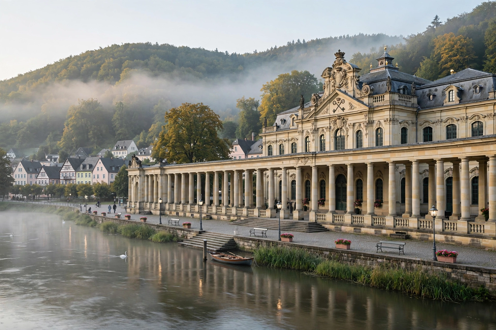

Bad Ems

| Bad Ems | |
|---|---|
| Country | Germany |
| State | Rhineland-Palatinate |
| District | Rhein-Lahn-Kreis |
| Elevation | 80 m (260 ft) |
| Population | approx. 9,200 |
| Postal code | 56130 |
| UNESCO status | Part of the Great Spa Towns of Europe (2021) |
Bad Ems is a town in the German state of Rhineland-Palatinate, in the Rhein-Lahn district. It lies on both banks of the River Lahn, at the foot of the Taunus and Westerwald hills, about 10 kilometres east of Koblenz. A famous spa town, "Bad" is the German prefix denoting an officially recognised health resort.
Bad Ems is best known internationally for the Ems Dispatch (Emser Depesche) of 13 July 1870, the edited telegram concerning a meeting between King Wilhelm I of Prussia and the French ambassador, whose publication helped provoke the Franco-Prussian War.
History
The town's hot springs were already known in Roman times; the Upper Germanic-Rhaetian Limes, the frontier of the Roman Empire, ran close by, and remains of Roman baths have been found. In the Middle Ages Ems was a village under various lords, and its springs were used from the 14th century onwards. The great spa era began in the 17th and 18th centuries, when Ems became one of Europe's most fashionable resorts, visited by royalty, aristocrats and artists.
In the 19th century, guests included Tsar Alexander II of Russia, Kaiser Wilhelm I, composers such as Richard Wagner and Jacques Offenbach, and writers including Dostoyevsky, who wrote part of his work while staying in Ems. On 13 July 1870, on the Kurhaus promenade, Count Benedetti, the French ambassador, approached King Wilhelm I to demand guarantees that no Hohenzollern would again seek the Spanish throne. Wilhelm's report of the meeting was telegraphed to Chancellor Otto von Bismarck, who published an edited version — the Ems Dispatch — that inflamed opinion in both countries and led France to declare war.
In 2021 Bad Ems was inscribed on the UNESCO World Heritage List as part of the transnational "Great Spa Towns of Europe".
The springs and spa facilities
Bad Ems has around fifteen hot springs, with alkaline waters containing sodium bicarbonate and sodium chloride rising at temperatures of roughly 27–57 °C. The waters are used for drinking cures, inhalation and bathing, traditionally for respiratory and metabolic complaints. The town's Emser Salz (Ems salt), obtained from the springs, is sold worldwide in pastille form. Landmarks of the spa quarter include the Baroque Kurhaus, the Kursaal building with its marble hall, the Russian Orthodox church (built for the many Russian guests), and the Quellenhaus. The Kurwaldbahn, one of the steepest funicular railways in the world, climbs to the Bismarckhöhe, and the older Malbergbahn once served the Malberg hill on the opposite bank.
Geography
The town sits in the narrow, winding lower Lahn valley, which cuts between the Taunus to the south and the Westerwald to the north. The settlement stretches for several kilometres along the river, giving Bad Ems an unusually elongated town plan. Surrounding hills rise to about 300–400 metres and are heavily wooded.
Transport
Bad Ems has a station on the Lahn Valley Railway between Koblenz and Wetzlar/Giessen, and road connections to the A3 and A48 motorways via Koblenz.